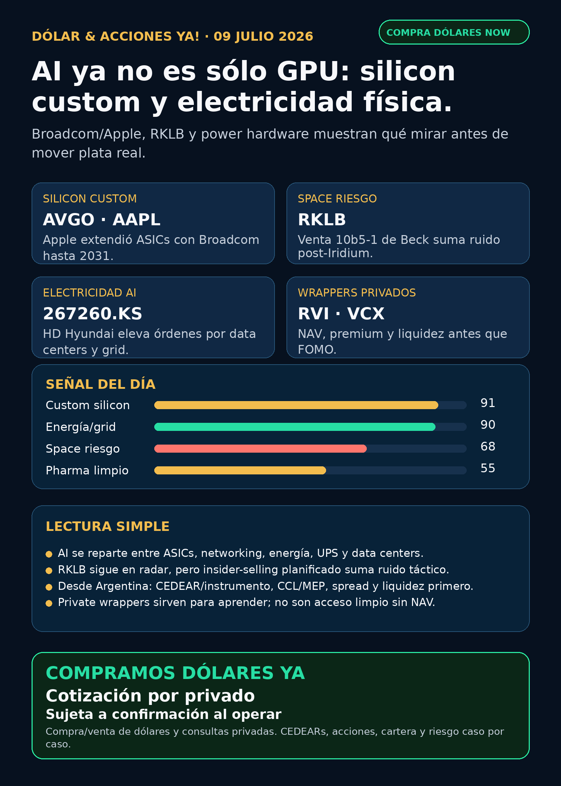

AI ya no es sólo GPU.
Broadcom/Apple, RKLB y electricidad física: research educativo para Argentina, no orden de compra.
Texto WhatsApp
Placa del día

Dólar & Acciones YA — 09/07
Lectura simple del día
La señal de hoy es que AI se está industrializando. Ya no alcanza con mirar una sola acción de GPU. El dinero grande se está repartiendo entre silicon custom, networking, memoria, data centers, electricidad física, transformadores, UPS, defensa y space.
En criollo: si una empresa dice “AI”, la pregunta no es “¿suena futurista?”. La pregunta es qué peaje cobra y si ese peaje tiene fuente verificable: chip, ASIC a medida, red, energía, software, defensa, lanzamiento espacial o wrapper financiero.
Para Argentina hay una segunda capa: buena empresa afuera ≠ buen instrumento local. Antes de hablar de ejecución hay que mirar si existe CEDEAR o vía global, liquidez, spread, comisiones, CCL/MEP, ratio, broker y tamaño prudente.
Contexto dólar para lectores argentinos, tomado de fuentes públicas a las 08:47 ART: BlueLytics informó oficial vendedor ARS 1.513,00 y blue vendedor ARS 1.515,00 con timestamp 2026-07-09 08:45 ART. CriptoYa informó USDT cripto ask ARS 1.566,00 a las 08:47 ART; MEP AL30 ARS 1.587,30 y CCL AL30 ARS 1.581,16 venían con timestamp de cierre 2026-07-08 16:59 ART, así que se usan como referencia educativa, no como precio vivo de broker.
Esto está ordenado por valor educativo y fuerza de señal de radar, no por recomendación de compra.
Tesis central
El trade de AI se está yendo de “GPU solamente” a infraestructura física y contratos largos. Broadcom confirmó con Apple acuerdos de custom ASIC silicon hasta 2031; Rocket Lab sigue siendo space de alto interés pero hoy trae ruido táctico por ventas 10b5-1 de Peter Beck; y el carril electricidad física se agranda con HD Hyundai Electric y ZincFive.
La lectura de inversión humana: buena empresa ≠ buena inversión al precio actual ≠ buen instrumento para Argentina ≠ buen tamaño dentro de una cartera.
Señales educativas del día
1) Broadcom + Apple — custom silicon como peaje de AI
- Empresa/ticker: Broadcom /
AVGO; Apple /AAPL. - Qué pasó: Broadcom presentó 8-K el 06/07/2026 confirmando acuerdos multianuales con Apple hasta 2031 para desarrollar y proveer custom ASIC silicon products para múltiples generaciones de productos Apple.
- Fuente primaria: https://www.sec.gov/Archives/edgar/data/1730168/000119312526295589/d84378d8k.htm
- Lectura en criollo: no todo el moat de AI pasa por comprar GPU estándar. También hay chips a medida, networking, proveedores de silicon y contratos de muchos años con clientes gigantes.
- Riesgo: valuación, concentración de clientes, presión de márgenes y que “Apple + AI” no implica automáticamente monetización visible en el corto plazo.
- Accionable local Argentina:
AAPLsuele tener vía CEDEAR;AVGOpuede requerir verificar CEDEAR/broker específico, spread y liquidez. Internacional/global: acción directa en Nasdaq. En ambos casos, no es recomendación personalizada. - Estado: señal fortalecida para
AVGO;AAPLqueda en vigilancia por estrategia de silicon, no como AI moat automático.
2) Rocket Lab — tesis espacial vigente, pero con ruido táctico
- Empresa/ticker: Rocket Lab /
RKLB. - Qué pasó: Form 4 de Peter Beck/Equatorial Trust reporta ventas automáticas bajo Rule 10b5-1 entre el 06/07 y el 08/07. Parseo del filing: 3.275.779 acciones vendidas, VWAP aproximado USD 87,43, proceeds estimados USD 286,4 millones.
- Fuente primaria: https://www.sec.gov/Archives/edgar/data/1819994/000200101126000109/xslF345X06/edgardoc.xml
- Lectura en criollo: una venta 10b5-1 no significa necesariamente que el fundador “abandona el barco”, porque puede estar planificada antes. Pero después del acuerdo para adquirir Iridium, suma ruido: deuda, integración, aprobación regulatoria, dilución posible y presión técnica.
- Accionable local Argentina: no asumir instrumento local. Verificar acceso en broker, liquidez, spread y CCL/MEP antes de cualquier decisión.
- Estado: tesis espacial sigue en radar; señal táctica debilitada / vigilar.
3) Electricidad física — transformadores, distribución y UPS
- Empresa/ticker: HD Hyundai Electric /
267260.KS. - Qué pasó: Chosunbiz reportó que HD Hyundai Electric elevó su target de órdenes 2026 de USD 4.222 millones a USD 5.185 millones (+22,8%) por AI data centers y reemplazo de redes extra-high-voltage en Norteamérica.
- Fuente: https://biz.chosun.com/en/en-industry/2026/07/06/KE24LZNWMBEZFAQXAPYOEAMJUQ/
- Qué pasó adicional: ZincFive, privada, apunta a IPO en septiembre/octubre 2026 con USD 100 millones de PIPE comprometido y dice tener casi 2 GW de battery backup cabinets desplegados globalmente para UPS/data centers.
- Fuente ZincFive: https://pv-magazine-usa.com/2026/07/08/nickel-zinc-battery-maker-zincfive-targets-ipo-eyes-ai-data-center-growth/
- Lectura en criollo: el segundo peaje de AI es electricidad física. No sólo generación: transformadores, distribución, switchgear, UPS, calidad de potencia y cargas pulsantes de racks GPU.
- Accionable local Argentina: Corea/privadas no son fáciles para todos.
GEV, Siemens Energy, Hitachi/Hitachi Energy y proxies globales pueden ser más operables, pero requieren verificar instrumento. Energéticas argentinas (YPF,PAMP,TGS,CEPU) sirven para aprender energía local; no son proxy perfecto de AI data centers de Estados Unidos. - Estado: señal fortalecida para power hardware; ZincFive es radar educativo/no accionable directo todavía.
4) RVI / private wrappers — no confundir “acceso a privadas” con instrumento limpio
- Instrumento: Robinhood Ventures Fund I /
RVI. - Qué pasó: Form 4 del 08/07/2026 muestra que Robinhood Markets vendió 21.294 shares de RVI entre el 06/07 y el 07/07, por proceeds estimados USD 689.832; quedan 13.324.375 shares después de esas operaciones.
- Fuente primaria: https://www.sec.gov/Archives/edgar/data/2085091/000178387926000089/xslF345X06/wk-form4_1783543002.xml
- Lectura: los wrappers privados pueden servir para educación, pero no son magia. Hay que mirar NAV, premium/descuento, liquidez, lockups, sponsor sales, holdings reales y acceso Argentina/USA.
- Estado: vigilar / riesgo de wrapper.
VCXapareció como hype social, pero sin fact sheet/holdings/NAV verificado queda en auditoría.
5) Cerebras — AI infra alternativa, pero no confundir ownership con negocio
- Empresa/ticker: Cerebras Systems /
CBRS. - Qué pasó: Schedule 13G/A del 08/07/2026 muestra a FMR LLC/Fidelity con beneficial ownership de 28.878.217 shares, equivalente a 25,7% de Class A Common Stock.
- Fuente primaria: https://www.sec.gov/Archives/edgar/data/2021728/000031506626001451/xslSCHEDULE_13G_X02/primary_doc.xml
- Lectura: Cerebras sigue siendo radar alto como alternativa pública a NVIDIA en AI infrastructure. Pero este filing habla de ownership, no de revenue nuevo ni contrato nuevo.
- Estado: vigilar; revisar revenue, concentración de clientes, OpenAI/AWS, lockups, liquidez y valuación antes de elevar a candidato.
Watchlist base — seguimiento rápido
- RKLB: señal táctica negativa/mixta por Form 4 de Peter Beck; tesis espacial vigente, pero con deuda/integración post-Iridium bajo lupa.
- NVDA: sin filing operacional nuevo fuerte hoy; tesis estructural sigue por AI infra, networking, Vera/CPU y liquid cooling de señales previas.
- PLTR: señal secundaria en México/GNP Seguros vía Yahoo/GuruFocus; útil para narrativa de AI operacional LatAm, no headline fuerte sin primaria Palantir/GNP.
- TSM: moat foundry vigente; sin primaria nueva fuerte hoy.
- MU: HBM/memoria sigue tesis estructural; sin novedad primaria fresca hoy.
- GOOGL/GOOG: cloud, TPUs, energía y distribución siguen estructurales; sin fuente primaria nueva fuerte hoy.
- AAPL: señal indirecta fuerte por Broadcom/ASICs hasta 2031; vigilar estrategia AI silicon y dependencia de proveedores.
- HOOD: Robinhood Chain/Agentic Trading sigue como crypto gobernado/AI agents de jornadas previas; hoy sin filing operacional fuerte.
- TSLA: Q2 deliveries/storage de señal previa sigue vigente; hoy sin primaria nueva superior.
- ASML: moat EUV/High-NA vigente;
ASML sí / all-in no. - Gold / GLD / GOLD / B: instrumento ambiguo. No publicar precio/tesis sin confirmar si es oro físico, ETF, minera u otro ticker.
- RVI: nuevas sponsor sales; riesgo de wrapper/liquidez.
- CBRS: Fidelity 25,7% por 13G/A; vigilar, no catalyst operativo.
- AVGO: señal fuerte primaria por Apple custom ASICs hasta 2031.
Energía y capa Argentina
- AI power global: carril fuerte. Incluye generación onsite, gas/nuclear, fuel cells, storage, transmisión, subestaciones, transformadores, switchgear, UPS y power quality.
- Transformadores/power hardware: señal del día en HD Hyundai Electric. También revisados: Hitachi/Hitachi Energy (
6501.T/HTHIY), Siemens Energy (ENR.DE), GE Vernova (GEV), Hyosung Heavy Industries (298040.KS), Virginia Transformer y Delta Star. No elevar Hyosung/Hitachi sin fuente primaria limpia. - Argentina:
YPFpresentó 6-K con cambios de directorio; no fue señal operativa de Vaca Muerta.PAMP,TGS,CEPUrevisadas sin señal primaria nueva fuerte. Sirven como radar educativo local de gas, generación, tarifas, deuda y regulación. - En criollo: capex = inversión pesada para construir infraestructura. Puede ser oportunidad si hay demanda y contratos; también puede ser riesgo si hay deuda, permisos, demoras o regulación.
Pharma/salud
- GLP-1/oral obesity pills: Reuters apareció como discovery, pero quedó bloqueado por DataDome. No uso el detalle como claim cerrado.
- Novo Nordisk /
NVO: 6-K del 06/07/2026 confirma continuidad del buyback hasta DKK 15.000 millones; es retorno de capital, no catalyst clínico. Fuente: https://www.sec.gov/Archives/edgar/data/353278/000117184326004469/f6k_070626.htm - Merck KGaA/enpatoran, MRK/Keytruda, AZN/Daiichi/Enhertu: aparecieron en RSS/secundarias, pero faltó primaria abierta. Quedan en auditoría.
- Estado: pharma revisada; tesis estructural vigente, sin señal clínica primaria nueva suficiente para headline público.
Defensa, space, autonomía y crypto gobernado
- Defensa/guerra física:
AVAV,GE,RTX,LMT,NOC,GD,HWM,KTOS,BA,ITA/XARrevisados. AVAV sigue en radar por counter-UAS y contratos previos; GE Aerospace tuvo discovery secundario, no headline sin DoD/IR. - Space/orbital AI:
RKLBySPCXrevisados. RKLB tiene señal táctica mixta por insider sales; SPCX sigue central por filings SEC previos, pero no se asume CEDEAR/acceso local. - Autonomous mobility / physical AI: TSLA/Waymo-Alphabet/Uber/Zoox-Amazon/Joby revisados sin señal primaria nueva fuerte hoy.
- Crypto gobernado: sin token nuevo para elevar. Sólo infraestructura, stablecoins/proxies regulados y alertas de riesgo; nada de casino de tokens.
Red flags / hype para ignorar
- Decir “Apple + AI” como compra automática sin mirar monetización, proveedor real, valuación e instrumento.
- Leer ventas 10b5-1 de RKLB como tesis rota sin contexto, o ignorarlas por fanatismo espacial.
- Confundir demanda eléctrica de data centers con revenue automático para cualquier utility.
- Comprar wrappers privados (
RVI,DXYZ,VCX) sin NAV, premium/descuento, liquidez, holdings y acceso. - Publicar pharma desde RSS bloqueado como si fuera fuente primaria.
- Hablar de Gold/GLD/GOLD/B sin instrumento exacto.
Qué mirar después
AVGO/Apple: próximos filings, concentración, margen y cómo se conecta con AI devices.RKLB: presión post-Form 4, financiación/deuda del deal Iridium, aprobaciones y guía.- Power hardware: nuevos orders/backlog de
GEV, Siemens Energy, Hitachi, HD Hyundai, Hyosung y fabricantes privados. - ZincFive: S-1/IPO real, revenue, clientes, márgenes, PIPE y valuación.
- Pharma: buscar fuentes primarias para GLP-1 oral, enpatoran, Enhertu y Keytruda/Trodelvy.
- Argentina: precio vivo, MEP/CCL, spreads y liquidez antes de cualquier ejecución.
Servicio privado
Dólar · CEDEARs · acciones · consulta privada. Si querés comprar o vender dólares, invertir en acciones o pensar una estrategia financiera más personalizada, escribime por privado y lo vemos caso por caso. Cotización sujeta a confirmación al momento de operar.
Disclaimer
Esto es research educativo y editorial, no asesoramiento financiero personalizado. Buena empresa ≠ buena inversión al precio actual ≠ buen instrumento para Argentina ≠ buen tamaño dentro de una cartera.